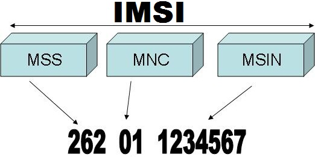
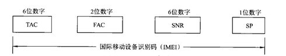
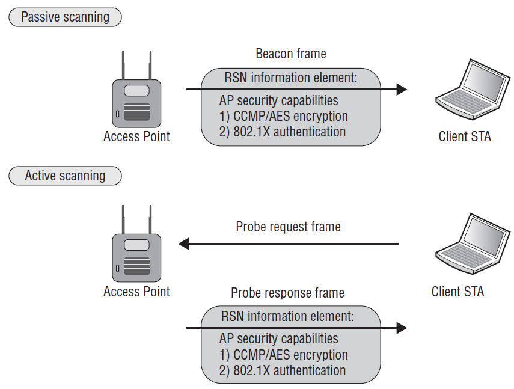
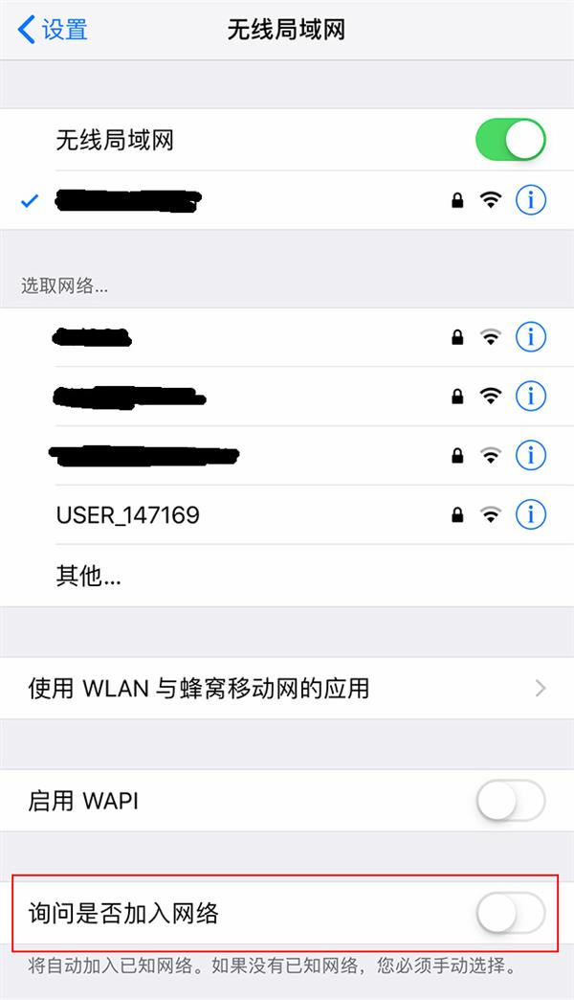
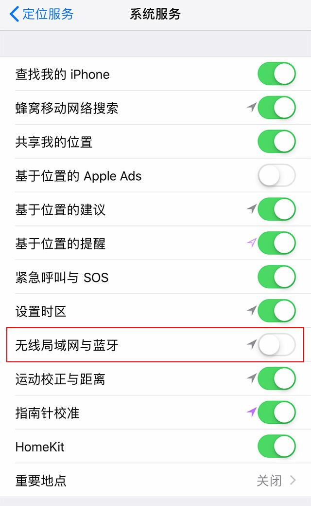
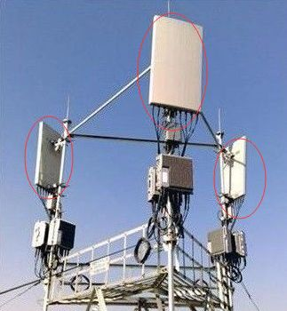
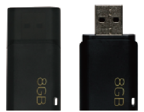
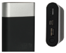

云深技术常识指南(二)
分享人：沈创 2019-07-15
IMSI、IMEI、MAC、PN
IMSI
国际移动用户识别码
MCC:国家代号(中国460)；MNC:移动网号码；MSIN:移动用户识别码
一张SIM卡里不仅有IMSI信息还有ICCID信息；ICCID只用来区别卡，而IMSI在接入网络时，会到运营商的服务器中进行验证。
IMEI
国际移动设备识别码
TAC:型号核准码；FAC:产地；SNR:生产序号；SP:检验码
双卡手机具有两个IMEI *#06#可进行查询
MAC
网络设备生产时烧录在网卡上的EPROM
MAC地址：48位二进制数，通常表示为12位十六进制数；冒号和其他字符只是起分隔作用
IMSI、IMEI、MAC、PN都是可以伪造的
比如：XPrivacy（基于Xposed框架）
再比如：SNC（也是基于Xposed框架）
TZ、JZ、YC
TZ
基于WIFI探测技术来识别AP附近已开启WIFI的智能手机或者WIFI终端

TZ

更多关于beacon/probe frame: https://www.jianshu.com/p/c9f171da0c78
TZ
特点：
- 无需用户参与，无需连入到网络
- Android IOS全兼容
- 自动探测区域内MAC地址
- 可以获取目标MAC地址、传输信道、帧类型、信号强度、所连接的热点名称等
TZ的干扰项
在Android7.1和IOS8以上的版本中，增加了Probe 请求帧使用假名MAC的功能。


JZ和YC

硬件设备


工作流程
采集到嫌疑人MAC信息和采集JZ信息
↓
根据JZ信息使用JZ产品定位嫌疑人方向(1-2公里范围)
↓
使用YC在1-2公里范围内进行扫描
↓
得到嫌疑人精准位置信息